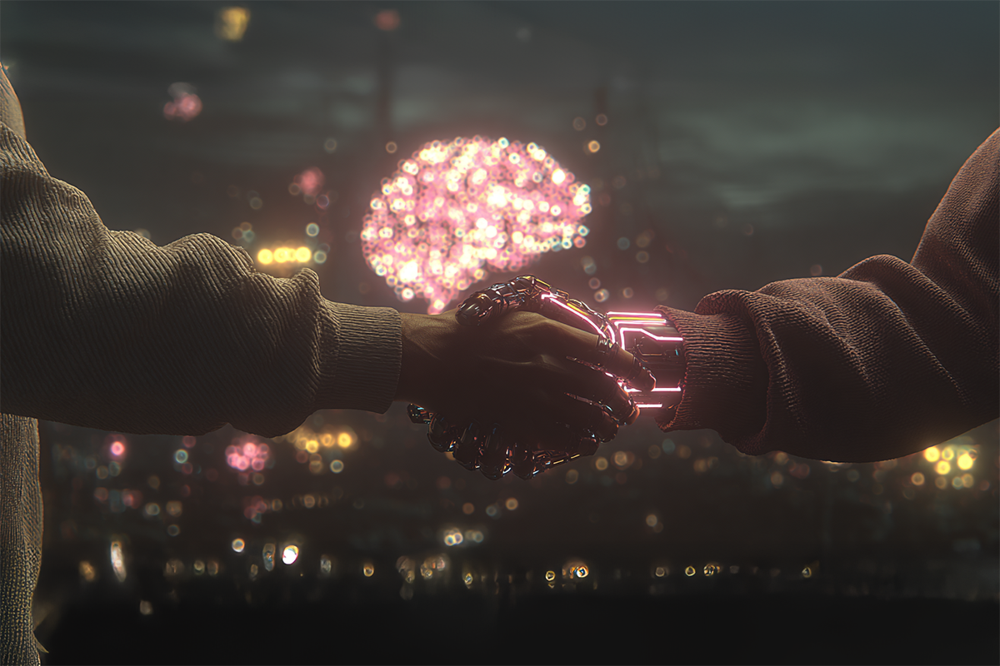
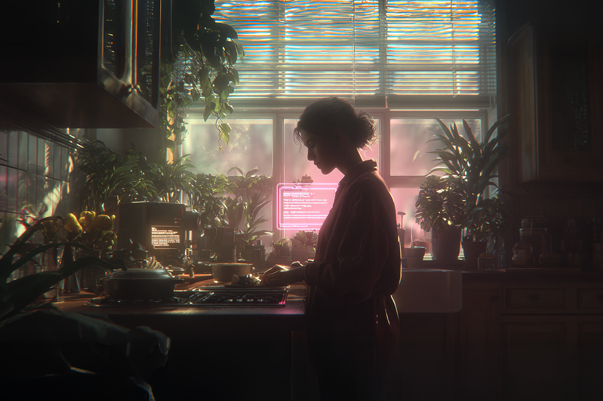
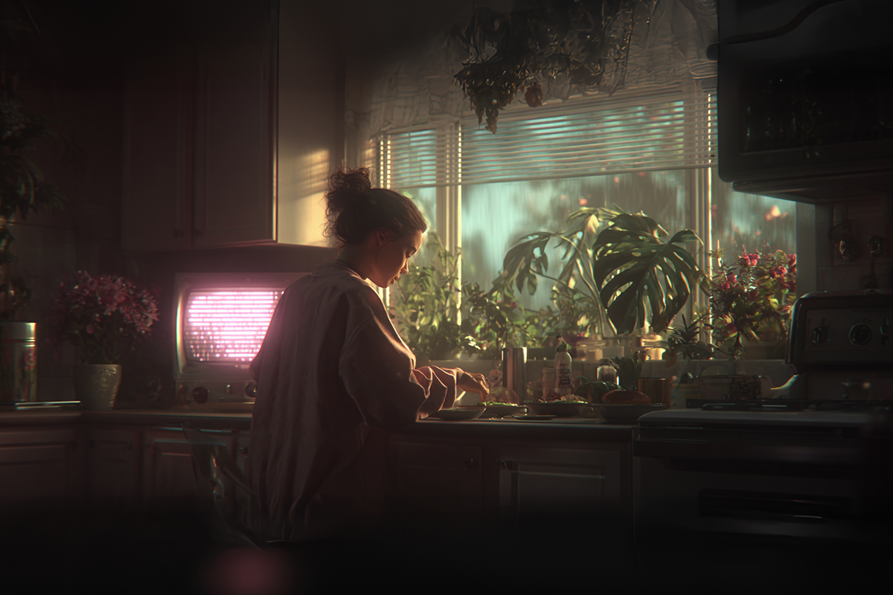

Entre humanos e IA: la dupla que está reescribiendo el trabajo
Automatizar no es reemplazar, sino liberarnos de las tareas lateras del día a día.
Automatizar no es reemplazar, sino liberarnos de las tareas lateras del día a día.

Hasta hace poco, el trabajo “de oficina” era sinónimo de tareas repetitivas: cargar correos, responder mensajes, clasificar leads o revisar planillas infinitas. Hoy, todo eso lo hace una inteligencia artificial… y lo hace bien.
El 2025 se convirtió en el año en que dejamos de hacer lo automático para enfocarnos en lo más importante. Y no, la IA no vino a quitarnos el trabajo como pensábamos, sino a quitarnos lo latero del proceso.

En ComparaOnline lo vivimos día a día. Procesos que tomaban horas -como responder consultas, cargar correos en una plataforma o actualizar datos- ahora se ejecutan casi solos.
Lo que antes era manual y fragmentado, hoy es más fluido, eficiente y mucho más humano, porque nos deja tiempo para pensar en la experiencia de quienes nos leen, comparan o confían en nosotros.
Automatizar no es perder el control, al contrario; es ganar espacio para lo que sí necesita cabeza y corazón. Porque mientras la IA se encarga del proceso, nosotros del propósito.
Y esa alianza -entre algoritmos que ejecutan y personas que deciden- está reescribiendo cómo trabajamos, cómo pensamos y hasta cómo medimos la productividad.

La inteligencia artificial ya forma parte de cómo trabajamos en ComparaOnline: nos ayuda a responder más rápido, cuidar la seguridad de los datos y ofrecer una experiencia más personalizada.
Porque al final, la tecnología no reemplaza a las personas, las potencia. Y si algo aprendimos este año, es que la oficina del futuro no será solo humana… pero sí más humana que nunca. O al menos, a eso aspiramos.
 Tecnología
TecnologíaSi eres como yo y revisas TikTok e Instagram constantemente, te habrás dado cuenta de que estas redes son casi como un experimento social.
 Tecnología
TecnologíaHablamos mucho de inteligencia artificial. La tenemos integrada en nuestra vida, nos ayuda en nuestros trabajos y le preguntamos cosas de…
 Tecnología
TecnologíaDurante años hemos pensado en la inteligencia artificial como algo súper frío: servidores gigantes, computadores procesando datos y…